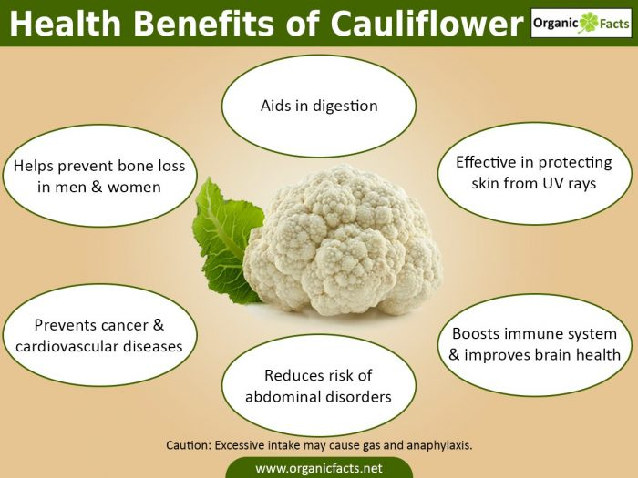

Cauliflower Is Cool!
Health Benefits Of Cauliflower
The health benefits of cauliflower include a reduced risk of cancer, heart and brain disorders, relief from indigestion, detoxification of the body, increased iron absorption, and weight loss. This superfood also helps boost eye health, maintain hormonal balance, and prevents diabetes, colitis, respiratory papillomatosis, hypertension, and the harmful effects of ultraviolet radiation. It is packed with nutrients and antioxidant power which helps in strengthening the immune system, maintaining bone and cellular health, electrolyte balance, and optimum cholesterol levels.
